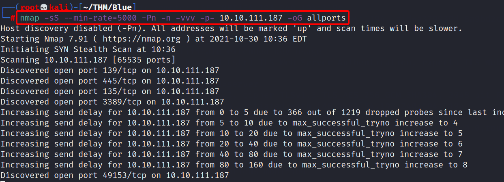
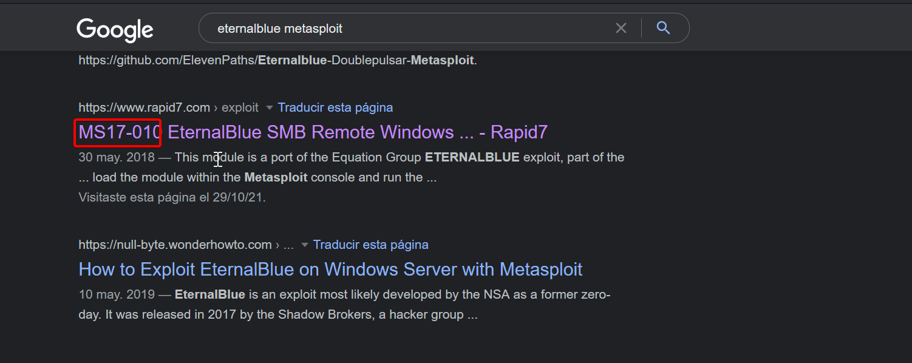

Scan the machine
Para esto usaremos nmap con la siguiente systax
nmap -sS --min-rate=5000 -Pn -n -vvv -p- 10.10.173.226 -oG allports

How many ports are open with a port number under 1000?
Si realizamos el scanning correctamente, veremos que se encuentran 3 puertos abiertos debajo de 1000
- 135/tcp
- 139/tcp
- 445/tcp
What is this machine vulnerable to? (Answer in the form of: ms??-???, ex: ms08-067)
Según el scanning podemos ver que se está utilizando SMBv1, y si lo relacionamos con el nombre de la máquina esto nos huele a Ethernalblue, por lo tanto vamos a buscar la respuesta en el formato correspondiente de la pregunta.
Ahora para encontrar el formato correspondiente a la pregunta me dirigí a google e realicé la siguiente búsqueda.
eternalblue metasploit
De inmediato nos encontramos con esto.

Respuesta: MS17-010